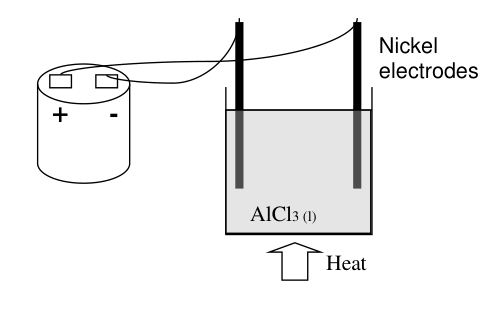

The table of ions and the reactivity series are in the Data section at the end of the paper.
Section A: Multiple choice (17 marks)
How many electrons does an oxygen atom have in its outer shell?
Fluorine (Group 7) atoms tend to ________ when they form chemical compounds with metals.
The identity of an element is determined by
Which of the following is the correct formula for aluminium oxide?
Al3+ and O2−: two Al3+ (+6) balance three O2− (−6).
Which of the following is the electron configuration of a magnesium ion, Mg2+?
Mg (2, 8, 2) loses its two outer electrons.
In redox reactions,
OIL RIG: Oxidation Is Loss, Reduction Is Gain (of electrons).
A reactive metal + hydrochloric acid is likely to give the products:
Which one of the following is not likely to increase the rate of the reaction of magnesium and HCl?
Zinc is less reactive than magnesium, so the reaction would be slower.
Group 1 (alkali) metals are not typical metals, but they do follow trends in their physical and chemical properties. Moving down the group (lithium, sodium, potassium, rubidium, caesium), which of the following best describes the pattern?
Using your knowledge of the reactivity series, which of the following metals are ALL likely to react with water (or steam)?
In general, a reactive metal + water will react to give:
Displacement reactions occur when a metal "kicks out" another metal from a solution. Which of the following is likely to result in a displacement reaction?
A metal can only displace a less reactive metal. Aluminium is above copper in the reactivity series.
In electroplating, the electrode that becomes plated with a metal is:
The final stage of the iron smelting process separates the iron metal from its ore:
Fe2O3(s) + 3CO(g) → 2Fe(l) + 3CO2(g)
During this stage:
Using heat (roasting) to reduce a metal from its oxidised state (ore) to its element (pure metal) cannot be used for all metals. The best reason for this is:
During electrolysis, metallurgists use large currents and oppositely charged electrodes to separate positive and negative ions. This works well to separate copper from copper sulfate, but electrolysis will not let us separate calcium from CaCl2(aq). The best reason for this is:
The best way to overcome the problem of separating calcium using electrolysis is to:
Section B: Short answer (33 marks)
Use your table of ions to complete the table. (Type formulas with ordinary numbers, e.g. Na2SO4.)
| Compound | Formula unit |
|---|---|
| Tin(IV) sulfate | |
| Magnesium hydroxide | |
| (NH4)2CO3 | |
| Calcium phosphate | |
| Iron(III) chloride |
Balance the following equation.
Al(s) + CuSO4(aq) → Cu(s) + Al2(SO4)3(aq)
Using your knowledge of metal–acid reactions, write a balanced chemical equation, with states, for zinc metal added to dilute hydrochloric acid solution.
Zn + HCl → +
Match the alloys with the descriptions: solder, brass, bronze, stainless steel, alnico, duralumin.
| Description | Alloy |
|---|---|
| 70% iron, 20% chromium, 10% nickel. Does not rust. | |
| 70% copper, 30% zinc. Harder than copper, attractive colour. | |
| 70% tin, 30% lead. Very soft. Low melting point. | |
| 95% copper, 5% tin. Harder than brass. Long lasting for outdoor use. |
Very reactive metals react vigorously with water to produce a metal hydroxide and hydrogen gas. Metals near the middle of the reactivity series react with steam to form a metal oxide plus hydrogen gas. Some metals do not react at all with steam or water.
Complete and balance the following equations, writing the likely product (a metal hydroxide or a metal oxide).
- Fe(s) + H2O(g) → + H2(g) (assume iron(III))
- K(s) + H2O(l) → + H2(g)
Explain why aluminium needs electrolysis to produce the pure metal, while copper can be extracted using far less powerful and expensive methods. Refer to:
- their relative positions in the reactivity series
- the form in which each element is usually found on Earth
- how easily each can be separated from its compounds.
- Aluminium is much more reactive than copper (it is above carbon in the reactivity series) (1 mark).
- Aluminium is usually found combined with oxygen (as Al2O3 in bauxite); copper is sometimes found pure (native), or as an ore (1 mark).
- Copper ores are easily reduced, e.g. by displacement with carbon (heating with carbon) (1 mark).
- Aluminium cannot be extracted this way; electrolysis of molten aluminium oxide is needed (1 mark).
Copper metal is placed in two conical flasks, each containing a different solution. One contains silver nitrate solution and the other contains magnesium nitrate solution, but the scientist forgot to label the flasks. Describe how and why you could identify each flask. Include any colour changes or precipitates (solids) you would expect to see.
- Silver nitrate flask: copper is more reactive than silver, so it displaces it: solid (grey/silver crystals of) silver forms on the copper (1 mark) and the solution turns blue as copper(II) ions form (1 mark).
- Magnesium nitrate flask: magnesium is more reactive than copper, so there is no reaction (1 mark): no observable change (1 mark).
Question 8
In the copper extraction experiment, electrolysis was one of the methods used to extract copper from its ore. Below is a diagram of a similar setup with molten aluminium chloride, AlCl3(l). The aluminium ions (Al3+) and chloride ions (Cl−) are free to move.

At which electrode would you expect to see oxidation and reduction?
Left electrode (connected to −):
Right electrode (connected to +):
Write the reduction and oxidation half-equations you would expect to occur.
Reduction (at the cathode): Al3+ + 3e− → Al (1 mark)
Oxidation (at the anode): 2Cl− → Cl2 + 2e− (1 mark)
Data: table of ions and reactivity series
Table 1: Positive and negative ions
| +1 | +2 | +3 | +4 |
|---|---|---|---|
| Lithium Li+ | Magnesium Mg2+ | Aluminium Al3+ | Tin(IV) Sn4+ |
| Sodium Na+ | Calcium Ca2+ | Chromium(III) Cr3+ | Lead(IV) Pb4+ |
| Potassium K+ | Barium Ba2+ | Iron(III) Fe3+ | |
| Silver Ag+ | Iron(II) Fe2+ | ||
| Copper(I) Cu+ | Copper(II) Cu2+ | ||
| Ammonium NH4+ | Zinc Zn2+ | ||
| Tin(II) Sn2+ | |||
| Lead(II) Pb2+ | |||
| Mercury Hg2+ | |||
| Manganese(II) Mn2+ |
| −1 | −2 | −3 |
|---|---|---|
| Fluoride F− | Oxide O2− | Nitride N3− |
| Chloride Cl− | Sulfide S2− | Phosphate PO43− |
| Bromide Br− | Sulfate SO42− | |
| Iodide I− | Carbonate CO32− | |
| Hydroxide OH− | Sulfite SO32− | |
| Nitrate NO3− | ||
| Permanganate MnO4− |
Table 2: Reactivity series (most reactive first)
Potassium K > Sodium Na > Calcium Ca > Magnesium Mg > Aluminium Al > (Carbon) > Zinc Zn > Iron Fe > Lead Pb > (Hydrogen) > Copper Cu > Silver Ag > Gold Au